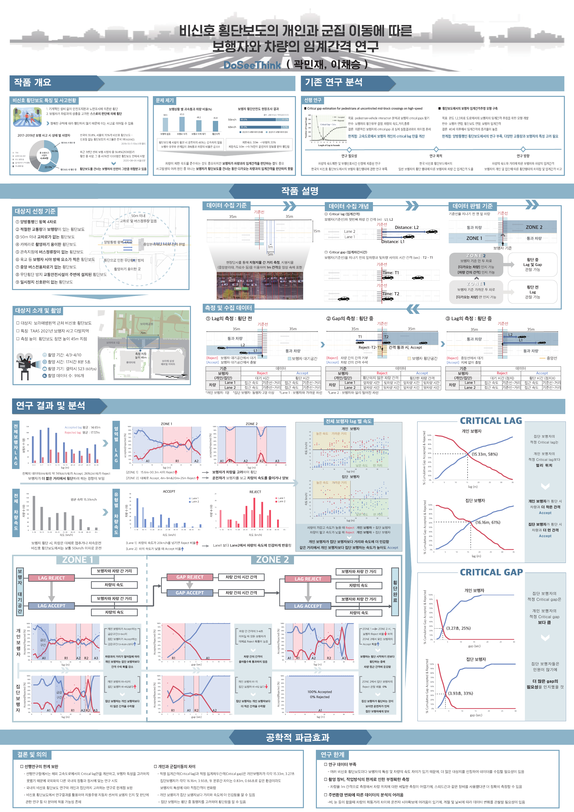

17시간 8분 5초
갤럭시 S23 60 fps 영상, 횡단보도 정면 45 m 지점에서 촬영
BACHELOR THESIS, PEDESTRIAN SAFETY
보라매병원역 인근 왕복 4차로 횡단보도를 17시간 촬영해 916개 사례를 만들고, 개인 보행자와 군집 보행자가 차량 사이 간격을 받아들이는 기준을 비교했다.

개인과 군집의 횡단 시작 조건을 거리와 시간으로 비교하고, 현장 데이터 수집, 분류, 분석 과정을 포스터로 발표했다.
DoSeeThink 포스터 원문 열기 ↗학사논문 원문 열기 ↗갤럭시 S23 60 fps 영상, 횡단보도 정면 45 m 지점에서 촬영
차량 속도, 보행자와 차량 거리, 차간시간, 수락 여부를 직접 판독
가까운 두 차로는 Lag, 먼 두 차로는 Lag와 Gap을 관찰하도록 분리
| 대상 | 임계간격 거리 | 임계차두간격 시간 |
|---|---|---|
| 개인 보행자 | 15.33 m | 3.27 초 |
| 군집 보행자 | 16.16 m | 3.93 초 |
개인 보행자가 차량 속도와 거리에 더 민감하게 반응했고, 보행자 유형에 따라 안전 판단 기준이 달라짐을 확인했다.
학부에서는 사람이 차량을 어떻게 보고 건너는지를 측정했다. 이후 대학원에서는 반대로 카메라와 라이다가 차량을 어떻게 관측하고 추정해야 하는지 연구했다. 관측 가능한 정보부터 정의하고 판단 기준을 세운다는 연구 습관은 두 작업에 공통으로 남아 있다.